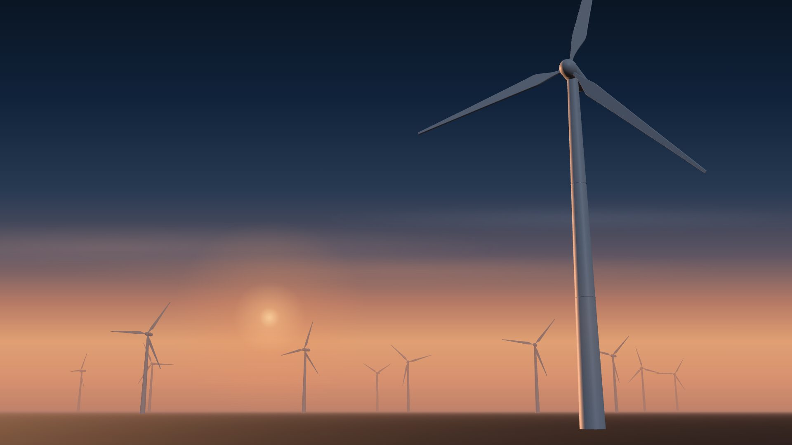

Rozpoznanie
Rozmawiamy o objawach, przeglądamy schemat instalacji i ustalamy punkty pomiarowe.

Testy NC RfG, analiza jakości energii i nadzór instalacji elektrycznych dla przemysłu i farm OZE.
Symulacja poglądowa
Odkształcony przebieg zamiast sinusoidy. Zwykły multimetr tego nie pokaże.
Każdą porównujemy z dopuszczalnym poziomem i szukamy źródła przekroczeń: napędów, falowników, zasilaczy.
Dobieramy rozwiązanie, a efekt sprawdzamy kolejnym pomiarem.
Zapytaj o analizę jakości energiiDziewięć obszarów, w których pracujemy na co dzień. Najczęściej zaczynamy od testów NC RfG albo analizy jakości energii.
Kodeksy sieciowe
Testy zgodności dla certyfikacji elektrowni odnawialnych. Prowadzimy obiekt do ostatecznego pozwolenia na użytkowanie (OPNU).
Zapytaj o usługęEN 50160
Rejestrujemy wahania napięcia, przepięcia, harmoniczne i współczynnik mocy. Wskazujemy źródła zakłóceń i sposób ich ograniczenia.
Mierzymy analizatorem parametrów jakości energii A.Eberle - PQ Box 150.
Zapytaj o usługęSterowniki polowe · nastawy
Konfiguracja sterowników polowych, nastawy zabezpieczeń i uruchomienie stacji transformatorowych. Limity napięcia i mocy ustawiamy pod konkretną instalację.
Zapytaj o usługęUtrzymanie ruchu
Regularne przeglądy, pomiary i konserwacja stacji. Usuwamy usterki i przygotowujemy urządzenia do eksploatacji.
Zapytaj o usługęPV · wiatr · biogaz
Farmy fotowoltaiczne, wiatrowe i biogazownie: monitoring pracy, serwis, przeglądy okresowe i raporty produkcji energii.
Zapytaj o usługęInstalacje elektryczne
Pomiary instalacji elektrycznych w firmach i domach. Także wtedy, gdy po montażu fotowoltaiki falownik zaczął się wyłączać.
Zapytaj o usługęOdbiory techniczne
Nadzorujemy elektryczną część inwestycji energetycznych i budowlanych: zgodność z projektem i normami, odbiory techniczne.
Zapytaj o usługętg φ · baterie kondensatorów
Sprawdzamy, jak pracuje bateria kondensatorów, czy nie traci wydajności i czy nie zbliża się awaria. Mniej opłat za ponadumowną energię bierną.
Zapytaj o usługęKoszty energii
Mierzymy, gdzie i kiedy zakład zużywa energię. Pokazujemy, które zmiany najbardziej obniżą koszty.
Zapytaj o usługęReferencje
Testy NC RfG zakończone ostatecznym pozwoleniem na użytkowanie.
„Prace wykonane były profesjonalnie, terminowo […] Podczas odbioru prac nie zgłoszono żadnych uwag.”
OPNU uzyskane
„Zadanie powierzone Firmie Energy Management Sp. z o.o. […] zostały wykonane zgodnie z warunkami umowy. Prace wykonane były profesjonalnie, terminowo, co skutecznie doprowadziło do uzyskania wymaganych odbiorów i ostatecznego pozwolenia na użytkowanie instalacji. Podczas odbioru prac nie zgłoszono żadnych uwag.”
„Wysokie kompetencje techniczne, rzetelność oraz doskonała komunikacja pozwalają nam rekomendować tę firmę […]”
OPNU uzyskane
„Wszystkie prace zostały zrealizowane terminowo, z zachowaniem najwyższych standardów branżowych oraz przy pełnym zaangażowaniu wykwalifikowanej kadry pracowniczej Energy Management Sp. z o.o. Wysokie kompetencje techniczne, rzetelność oraz doskonała komunikacja pozwalają nam rekomendować tę firmę jako rzetelnego, wiarygodnego i godnego zaufania partnera w obszarze obsługi farm fotowoltaicznych i energetyki.”
Od rozdzielni w hali po punkt przyłączenia farmy. Każde miejsce pomiaru odpowiada na inne pytanie o Twoją instalację.
Harmoniczne, zapady i wahania napięcia, przepięcia. Analizator rejestruje parametry przez pełny cykl pracy zakładu.
Wiesz, czy parametry mieszczą się w limitach i gdzie szukać przyczyn problemów.
Najczęstsze źródło harmonicznych w hali. Mierzymy, które odbiorniki zakłócają sieć i jak bardzo.
Wiesz, od których urządzeń zacząć ograniczanie zakłóceń.
Audyt pokazuje, gdzie i kiedy zakład zużywa najwięcej energii i co da się zoptymalizować.
Lista zmian uszeregowana według wpływu na koszty energii.
Sprawdzamy, czy kompensacja działa i czy bateria nie traci wydajności. Od tego zależy tg φ i opłaty za energię bierną.
Kontrola nad tg φ i opłatami za energię bierną.
Przeglądy, pomiary i konserwacja. Konfiguracja sterowników polowych i nastaw zabezpieczeń.
Stacja przygotowana do bezpiecznej eksploatacji.
Stały monitoring pracy, przeglądy okresowe i raporty produkcji energii.
Bieżący obraz pracy i produkcji farmy.
Zakłócenia generowane przez falowniki i ich reakcja na stan sieci. Także wyłączenia bez wyraźnej przyczyny.
Dane do ustalenia przyczyny wyłączeń.
Testy NC RfG do certyfikacji i ostatecznego pozwolenia na użytkowanie. Nastawy zabezpieczeń i uruchomienie stacji.
Badania wymagane w procesie uzyskania pozwolenia na użytkowanie.
Parametry, których wymaga operator sieci: napięcie, moc i jakość energii oddawanej do sieci.
Wyniki odniesione do warunków przyłączenia.
Testy zgodności NC RfG dla certyfikacji elektrowni.
Badania wymagane przed pozwoleniem na użytkowanie.
Przeglądy okresowe, monitoring pracy i raporty produkcji.
Regularna kontrola stanu farmy.
Konfiguracja sterowników polowych, programowanie nastaw zabezpieczeń, uruchomienie stacji.
Nastawy dopasowane do obiektu i wymagań operatora.
Indywidualne limity napięcia i mocy ustawione w oprogramowaniu, alarmy przy przekroczeniach.
Przekroczenia widać od razu, a nie dopiero w raporcie.
Regularne przeglądy, pomiary i konserwacja. Usuwanie usterek i przygotowanie do eksploatacji.
Aktualny stan techniczny i lista usterek do usunięcia.
Konfiguracja sterowników polowych, programowanie nastaw zabezpieczeń i uruchomienie stacji.
Stacja uruchomiona z nastawami dopasowanymi do obiektu.
Analiza danych baterii: kompensacja mocy biernej, wydajność i wczesne wykrycie problemów.
Wczesny sygnał, że bateria traci wydajność.
Gdy po montażu fotowoltaiki falownik się wyłącza, mierzymy napięcie i jakość energii w punkcie przyłączenia.
Dane do rozmowy z instalatorem lub operatorem sieci.
Sprawdzamy, jak instalacja współpracuje z siecią i czy parametry mieszczą się w normie.
Wiesz, czy parametry mieszczą się w normie.
Pomiary instalacji elektrycznej w domu, biurze lub małej firmie.
Wyniki pomiarów i zalecenia.
Cztery etapy. Na każdym wiesz, co mierzymy i po co.
Rozmawiamy o objawach, przeglądamy schemat instalacji i ustalamy punkty pomiarowe.
Analizator A.Eberle - PQ Box 150 rejestruje parametry przez typowy cykl pracy, a nie jedną chwilę.
Wyniki odnosimy do normy EN 50160 i warunków przyłączenia. Raport mówi co, gdzie i dlaczego.
Filtry, kompensacja, nastawy zabezpieczeń. Po zmianach mierzymy ponownie i porównujemy.
Opisz obiekt i czego potrzebujesz. Odpowiemy z propozycją zakresu i terminu.
Wolisz mailem? info@energymgmt.pl
Energy Management Sp. z o.o.
ul. Graniczna 9, lok. 23